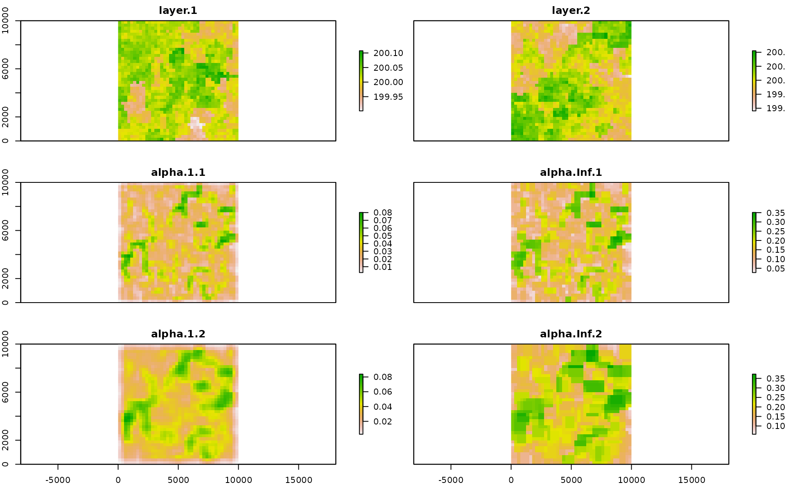

Multidimension Rao's Index.
Matteo Marcantonio, Daniele da Re, Duccio Rocchini
2022-09-17
Source:vignettes/rasterdiv_advanced_multidimension_Rao.Rmd
rasterdiv_advanced_multidimension_Rao.RmdThis vignette shows how to use rasterdiv to calculate Rao’s Index for multiple numerical matrices.
Overview
We will create two RasterLayers representing environmental conditions with some non-random spatial patterns. we fist create a grid.
gridDim <- 40 # 10000m/250 m = 40 columns and rows
xy <- expand.grid(x=1:gridDim, y=1:gridDim)The spatial autocorrelated pattern will be obtained using a semivariogram model with defined sill (value that the semivariogram attains at the range) and range (distance of 0 spatial correlation) and then predicting the semivariogram model over the lattice grid using unconditional Gaussian simulation.
varioMod <- vgm(psill=0.005, range=100, model='Exp') # psill=partial sill=(sill-nugget)
# Set up an additional variable from simple kriging
zDummy <- gstat(formula=z~1,
locations = ~x+y,
dummy=TRUE,
beta=200,
model=varioMod,
nmax=1)
# Generate a randomly autocorrelated predictor data field
set.seed(123)
xyz <- predict(zDummy, newdata=xy, nsim=2)# [using unconditional Gaussian simulation]We then add the spatial patterns into the grid to obtain two spatially autocorrelated rasters. The autocorrelated surfaces could, for example, represent the values of two plant functional traits in each cell.
utm32N <- "+proj=utm +zone=32 +ellps=WGS84 +datum=WGS84 +units=m +no_defs"
r <- raster(nrow=40, ncol=40, crs=utm32N, ext=extent(0,10000, 0,10000))
r1 <- raster(nrow=40, ncol=40, crs=utm32N, ext=extent(0,10000, 0,10000))
values(r)=xyz$sim1
values(r1)=xyz$sim2Now we calculate multidimension Rao’s index for two different moving windows and alpha values.
mRao <- paRao(x=list(r,r1), window=c(3,5), alpha=c(1,Inf), na.tolerance=1, method="multidimension",simplify=3, debugging=TRUE)The output is a nested list of RasterLayers which we can transform in a stack of RasterLayers and plotted together with the input layers, as follows:
